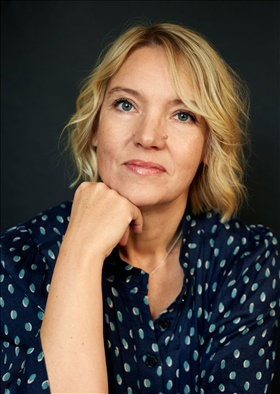

Vem?

Marja Grill är grävande reporter på SVT Nyheters grävnav. Hon har gjort flera prisbelönta dokumentärer och vunnit det prestigefyllda journalistpriset Guldspaden 2021 för ”Fallet Sofie” om familjehemsplacerade barns brist på rättigheter. I flera år har hon följt barn och ungdomar som varit i samhällets vård. På SiS–hem, i familjehem eller på HVB. Barn och unga som har missbruksproblem, självskadebeteenden eller som levt med hedersförtryck. Hennes senaste dokumentär ”De inlåsta hedersflickorna” (SVT 2022), har nominerats till flera priser och vann ”Best research and investigative” på filmfestivalen Angeles Docs i USA.